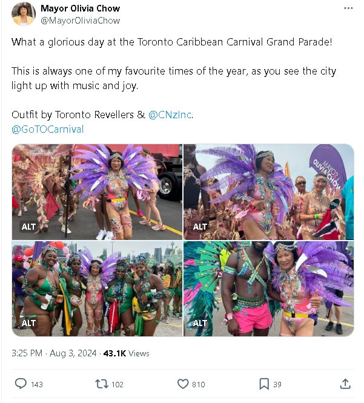
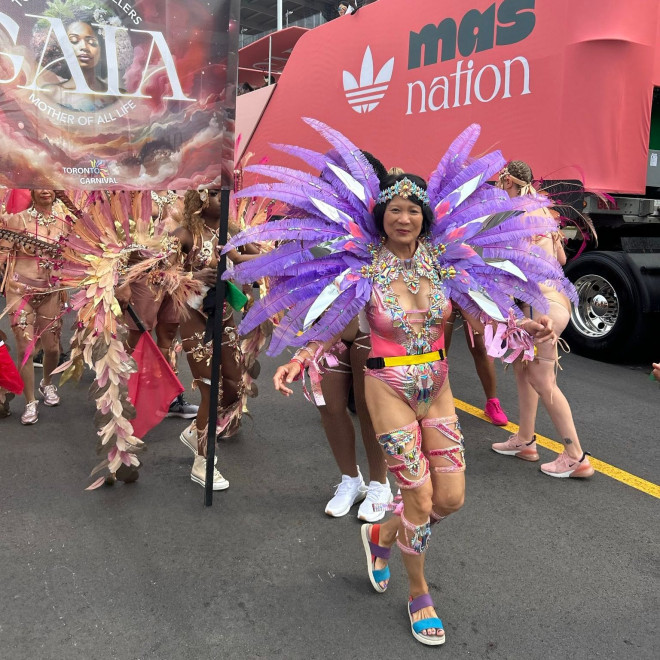
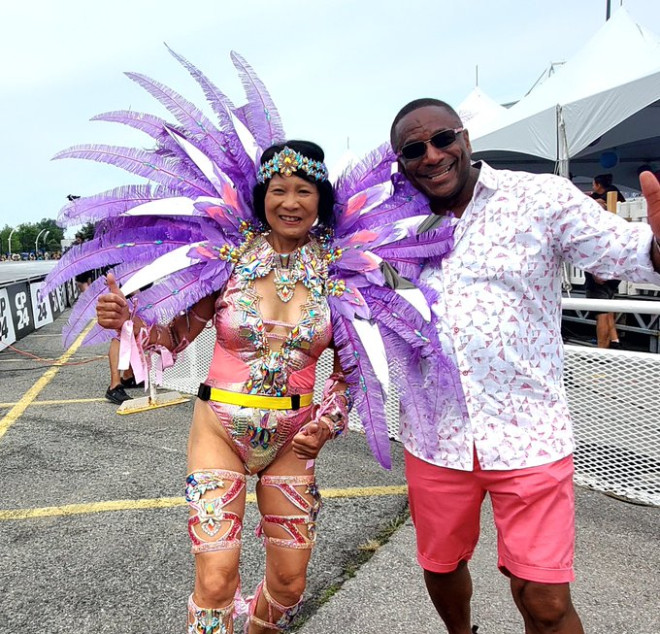

多伦多市长邹至蕙今天出席夏日最盛大的街头节日加勒比狂欢节。

她在自己的X账号中发布了多张照片，并表示：”今天是多伦多加勒比狂欢节大游行的辉煌日子！这始终是我一年中最喜欢的时刻之一，因为你可以看到整个城市在音乐和欢乐中闪耀。“
许多网友注意到，市长今天穿上了加勒比节日盛装，相当亮眼！
在市长的推文下，网友们对她这身装束给予评论，很多人夸赞：
”看起来非常有趣。“
”服装真美！别让批评你的人影响你的心情，你正在出色地代表多伦多。“
”这太棒了！我对我们的市长有一些不满，但她做这件事真的很棒。“
也有人在回复中表达了不满，称”你让这个城市尴尬“。

图源：X@MayorOliviaChow
多伦多市议员Michael Thompson在游行现场与市长合影：

图源：X@Councillor Michael Thompson
多伦多加勒比狂欢节是一个庆祝文化和多样性的活动，这是给城市带来欢乐的重要时刻。

图源：X@nowToronto
无论如何，市长参与加勒比节并穿上传统服装的举动更多地受到了正面的评价，体现了多伦多的多元文化和包容精神。